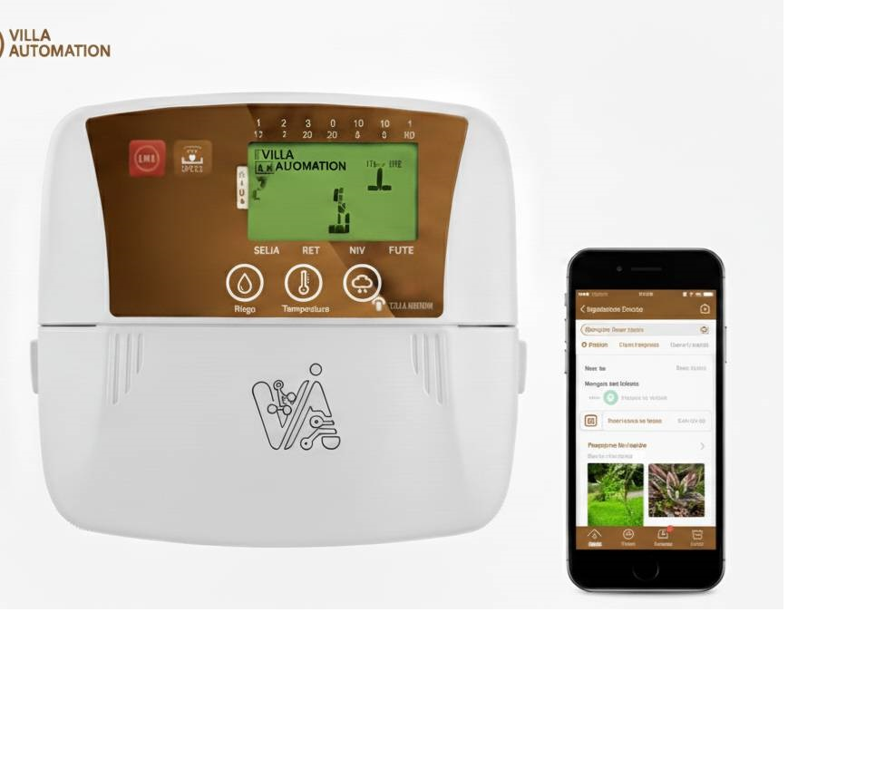
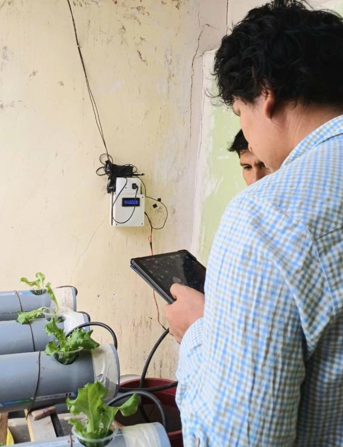

Controladores Inteligentes y Prototipos
En este espacio te mostramos los diferentes proyectos en controladores inteligentes para aplicaciones en diferentes areas.

En Villa Automation SAC desarrollamos controladores inteligentes de alto rendimiento diseñados para automatizar, supervisar y optimizar procesos industriales,
agrícolas y científicos. Nuestros equipos integran tecnología IoT, control avanzado y electrónica robusta para ofrecer soluciones confiables y escalables.
Un ejemplo el controlador de la imagen arriba tiene las siguiente carateristicas:
- Control en tiempo real con algoritmos PID, MPC e IA.
- Comunicación inalámbrica: Wi-Fi, Bluetooth, LoRa y GSM.
- Pantallas LCD/OLED táctiles según modelo.
- Registro de datos en memoria local y nube.
- Compatibilidad con sensores industriales y protocolos estándar.
- Diseño modular para expansiones y personalización.
- Software seguro y actualizable .
Aplicaciones
- Agricultura inteligente.
- Comunicación inalámbrica: Wi-Fi, Bluetooth, LoRa y GSM.
- Monitoreo ambiental y climático.
- Control de motores, bombas y actuadores.
- Instrumentación científica y educativa.

? Volver a la página principal